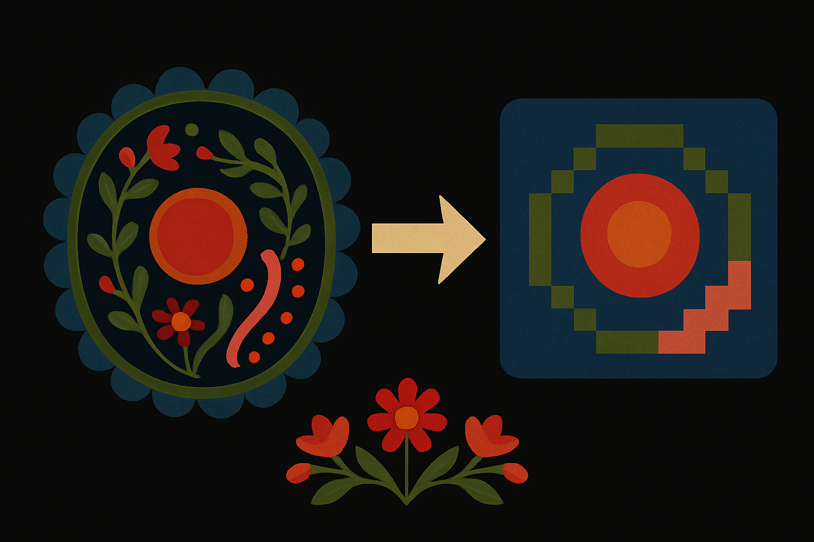

Patches: A Representation Learning framework for Decoding Shared and Condition-Specific Transcriptional Programs in Wound Healing
Oz Beker , Dreyton Amador, Jose Francisco Pomarino Nima, Simon Van Deursen,
Yvon Woappi ,
B.Dumitrascu

Summary : Patches is a representation learning framework designed to disentangle shared and condition-specific transcriptional programs during wound healing. We are actively expanding both Patches and its parent system, Ladder, to support cross-species and cross-modality analysis—leveraging comparative data to gain insight into human development and disease mechanisms.
Abstract : Single-cell genomics enables the study of cell states and cell state transitions across biological conditions like aging, drug treatment, or injury. However, existing computational methods often struggle to simultaneously disentangle shared
and condition-specific transcriptional patterns, particularly in experimental designs with missing data, unmatched cell
populations, or complex attribute combinations. To address these challenges, Patches identifies universal transcriptomic features alongside condition-dependent variations in scRNA-seq data. Using conditional subspace learning, Patches enables robust integration, cross-condition prediction, and biologically interpretable representations of gene expression. Unlike prior methods, Patches excels in experimental designs with multiple attributes, such as age, treatment, and temporal dynamics, distinguishing general cellular mechanisms from condition-dependent changes. We applied Patches to both simulated data and real transcriptomic datasets from skin injury models, focusing on the effects of aging and drug treatment. Patches revealed shared wound healing patterns and condition-specific changes in cell behavior and extracellular matrix remodeling. These insights deepen our understanding of tissue repair and can identify potential biomarkers for therapeutic interventions, particularly in contexts where the experimental design is complicated by missing or difficult-to-collect data.
Predictable Engineering of Signal-Dependent Cis-Regulatory Elements
Jake Cornwall-Scoones, Dirk Benzinger, Tianji Yu , Alberto Pezzotta, Andreas Sagner, Lina Gerontogianni, Shaun Bernadet, Elizabeth Finnie, Giulia LM Boezio, Hannah T Stuart, Manuela Melchionda, Oliver CK Inge, Bianca Dumitrascu , James Briscoe, M Joaquina Delás
Summary : This work develops methods to engineer cis-regulatory elements with predictable responses to signal dynamics, using high-throughput measurements of enhancer activity. The findings contribute to a framework for transcriptional control in regenerative and developmental contexts.
Abstract Cis-regulatory elements (CREs) control how genes respond to external signals, but the
principles governing their structure and function remain poorly understood. While
differential transcription factor binding is known to regulate gene expression, how
CREs integrate the amount and combination of inputs to secure precise spatiotemporal
profiles of gene expression remains unclear. Here, we developed a high-throughput
combinatorial screening strategy, that we term NeMECiS, to investigate signal7 dependent synthetic CREs (synCREs) in differentiating mammalian stem cells. By concatenating fragments of functional CREs from genes that respond to Sonic Hedgehog in the developing vertebrate neural tube, we found that CRE activity follows hierarchical design rules. While individual 200-base-pair fragments showed minimal activity, their combinations generated thousands of functional signal-responsive synCREs, many exceeding the activity of natural sequences. Statistical modelling
revealed CRE function can be decomposed into specific quantitative contributions in
which sequence fragments combine through a multiplicative rule, tuned by their relative positioning and spacing. These findings provide a predictive framework for CRE redesign, which we used to engineer synthetic CREs that alter the pattern of motor neuron differentiation in neural tissue. These findings establish quantitative principles for engineering synthetic regulatory elements with programmable signal responses to rewire genetic circuits and control stem cell differentiation, providing a basis for understanding developmental gene regulation and designing therapeutic gene expression systems.
Dynamic Cell Fate Plasticity and Tissue Integration in Synovial Joint Regeneration
Maria Blumenkrantz, Felicia Woron, Ernesto Gagarin, Everett Weinstein, Maryam H Kamel, Leonardo Campos, Agnieszka Geras, Troy Anderson, Julia Mo, Desmarie Sherwood, Maya Gwin, Bianca Dumitrascu , Nadeen O Chahine, Joanna Smeeton

Summary: : This collaborative effort investigates the cellular plasticity underlying joint regeneration. It combines transcriptomic profiling with tissue integration assays in a model of synovial recovery in an adult zebrafish.
Abstract: Adult mammalian synovial joints have limited regenerative capacity, where injuries heal with mechanically inferior fibrotic tissues. Here we developed a unilateral whole-joint resection model in adult zebrafish to advance our understanding of how to stimulate regrowth of native synovial joint tissues. Using a combination of microCT, histological, live imaging, and single-cell RNA sequencing (scRNAseq) approaches after complete removal of all joint tissues, we find de novo regeneration of articular cartilage, ligament, and synovium into a functional joint. Clonal lineage tracing and scRNAseq implicate a multipotent, neural crest-derived population in the adult skeleton as a cell source for these regenerating tissues. Together, our findings reveal latent molecular and cellular programs within the adult skeleton that are deployed to regenerate a complex joint with lubricated articular cartilage.
Deep Learning for Bioimage Analysis in Developmental Biology
Adrien Hallou, Hannah G. Yevick, Bianca Dumitrascu , Virginie Uhlmann

Summary: This review looks at deep learning techniques for extracting interpretable patterns from biological imaging data. Applications span developmental processes, cellular phenotyping, and tissue-scale inference using convolutional neural networks and segmentation tools.
Abstract: Deep learning has transformed the way large and complex image datasets can be processed, reshaping what is possible in bioimage analysis. As the complexity and size of bioimage data continues to grow, this new analysis paradigm is becoming increasingly ubiquitous. In this Review, we begin by introducing the concepts needed for beginners to understand deep learning. We then review how deep learning has impacted bioimage analysis and explore the open-source resources available to integrate it into a research project. Finally, we discuss the future of deep learning applied to cell and developmental biology. We analyze how state-of-the-art methodologies have the potential to transform our understanding of biological systems through new image-based analysis and modelling that integrate multimodal inputs in space and time.